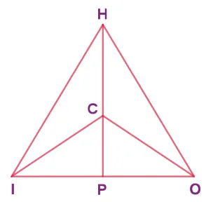
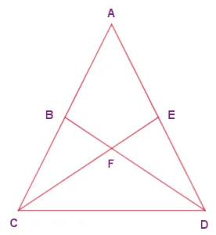
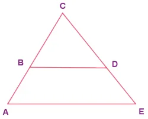
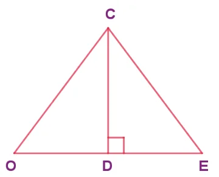
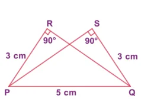
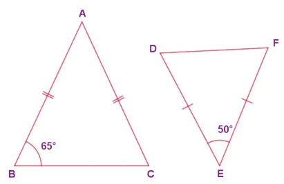
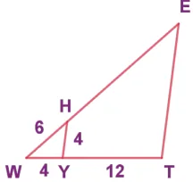
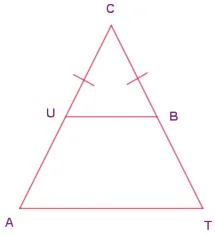

Fill in the blanks with the correct term from the given list. (in proportion, similar, corresponding, congruent, shape, area, equal)
Corresponding sides of similar triangles are \(\underline{\qquad}\).
Similar triangles have the same \(\underline{\qquad}\) but not necessarily the same size.
In any triangle \(\underline{\qquad}\) sides are opposite to equal angles.
The symbol \(\equiv\) is used to represent \(\underline{\qquad}\) triangles.
The symbol \(\sim\) is used to represent \(\underline{\qquad}\) triangles.
In the given figure, \(\angle CIP \equiv \angle COP\) and \(\angle HIP \equiv \angle HOP\). Prove that \(IP \equiv OP\).

In the given figure, \(AC \equiv AD\) and \(\angle CBD \equiv \angle DEC\). Prove that \(\triangle BCF \equiv \triangle EDF\).

In the given figure, \(\triangle BCD\) is isosceles with base \(BD\) and \(\angle BAE \equiv \angle DEA\). Prove that \(AB \equiv ED\).

In the given figure, \(D\) is the midpoint of \(OE\) and \(\angle CDE = 90^{\circ}\). Prove that \(\triangle ODC \equiv \triangle EDC\).

Is \(\triangle PRQ \equiv \triangle QSP\)? Why?

From the given figure, prove that \(\triangle ABC \sim \triangle EDF\).

In the given figure \(YH \parallel TE\). Prove that \(\triangle WHY \sim \triangle WET\) and also find HE and TE.

In the given figure, if \(\triangle EAT \sim \triangle BUN\), find the measure of all angles.
In the given figure, \(UB \parallel AT\) and \(CU \equiv CB\). Prove that \(\triangle CUB \sim \triangle CAT\) and hence \(\triangle CAT\) is isosceles.

Objective Type Questions
Two similar triangles will always have \(\underline{\qquad}\) angles (A) acute (B) obtuse (C) right (D) matching
If in triangles PQR and XYZ, \(\dfrac{PQ}{XY} = \dfrac{QR}{YZ}\) then they will be similar if (A) \(\angle Q = \angle Y\) (B) \(\angle P = \angle Y\) (C) \(\angle Q = \angle X\) (D) \(\angle P = \angle Z\)
A flag pole 15 \(m\) high casts a shadow of 3 \(m\) at 10 a.m. The shadow cast by a building at the same time is 18.6 \(m\). The height of the building is (A) 90 \(m\) (B) 91 \(m\) (C) 92 \(m\) (D) 93 \(m\)
If \(\triangle ABC \sim \triangle PQR\) in which \(\angle A = 53^{\circ}\) and \(\angle Q = 77^{\circ}\), then \(\angle R\) is (A) \(50^{\circ}\) (B) \(60^{\circ}\) (C) \(70^{\circ}\) (D) \(80^{\circ}\)
In the figure, which of the following statements is true?